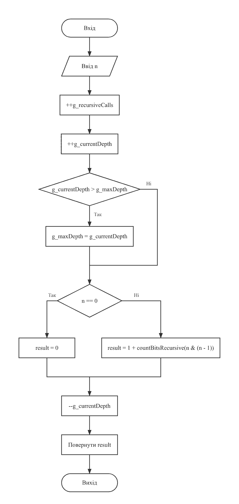
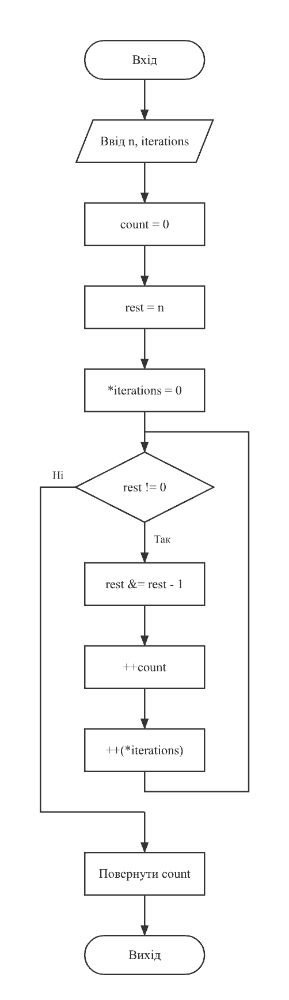
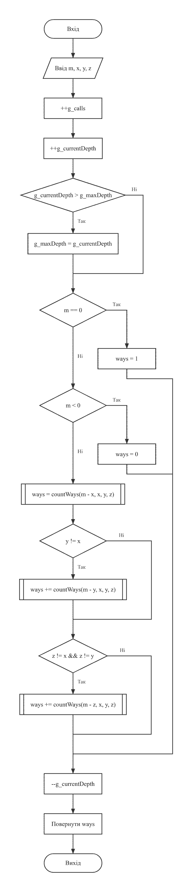
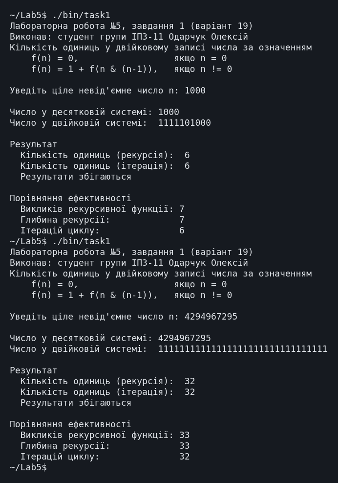
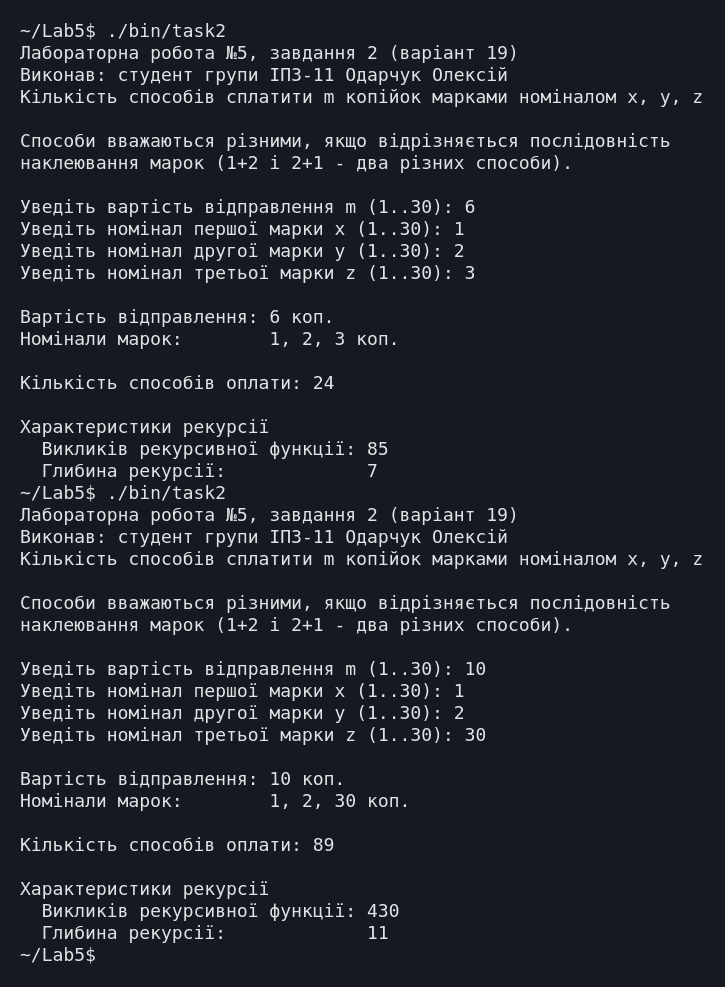

← До переліку лабораторних робіт
Лабораторна робота №5. Рекурсивні функції
Варіант 19. Виконав: Одарчук Олексій, КНУ імені Тараса Шевченка, ФІТ, група ІПЗ-11. C17, gcc
1. Мета роботи
- Вивчити особливості рекурсивних процесів.
- Опанувати технологію рекурсивних обчислень.
- Навчитися розробляти алгоритми та програми із застосуванням рекурсивних функцій.
2. Умова задачі
Завдання 1
Увести ціле число n в десятковій системі числення з клавіатури. Перевести його у двійкову систему. Знайти кількість одиниць у двійковому представленні числа n, використовуючи рекурентне означення функції f(n), де символ & означує операцію побітового логічного множення (таблиця 5.1, варіант 19):
| 0, якщо n = 0
f(n) = |
| 1 + f(n & (n - 1)), якщо n ≠ 0
Реалізувати рекурсивний та ітеративний варіанти розв'язку, порівняти ефективність, визначивши глибину рекурсії та кількість ітерацій циклу.
Завдання 2
Потрібно сплатити поштове відправлення, вартість котрого складає m копійок, а в наявності тільки поштові марки номіналом x, y, z копійок. Скількома різними способами можна сплатити поштове відправлення? Розробити рекурсивну функцію для обчислення кількості зображень числа m у вигляді суми фіксованих чисел, використавши рекурентне співвідношення для чисел Фібоначчі (таблиця 5.2, варіант 19).
| 1, n = 0
f(n) = | 1, n = 1
| f(n-1) + f(n-2), n > 2
Обмеження умови: забороняється використовувати масиви і рядки; використання рекурсії обов'язкове.
3. Аналіз задачі та теоретичне обґрунтування
Завдання 1. Означення f(n) = 1 + f(n & (n-1))
Віднімання одиниці інвертує наймолодший одиничний біт числа та всі нулі праворуч від
нього, тому n & (n - 1) гасить рівно цей біт, а старші лишає без змін.
Наприклад:
n = 1011100₂
n - 1 = 1011011₂
───────────────── &
1011000₂ <- погашено рівно один (наймолодший) одиничний біт
Кожен рекурсивний виклик прибирає одну одиницю, тож глибина рекурсії дорівнює кількості
одиниць плюс один завершальний виклик із n = 0 (алгоритм Кернігана).
Умова завершення рекурсії: n = 0. Вона завжди досяжна, бо кожен виклик
зменшує кількість одиничних бітів.
Двійковий запис також виводиться рекурсивно: виклик для старшої частини числа стоїть перед
виведенням розряду n % 2, тож розряди друкуються у правильному порядку без
масиву.
Завдання 2. Побудова рекурентного співвідношення
Будь-який спосіб оплати починається з наклеювання однієї марки - котроїсь із трьох. Після цього лишається сплатити суму, меншу на її номінал. Звідси:
w(m) = w(m - x) + w(m - y) + w(m - z) w(0) = 1 сума набрана точно - це один завершений спосіб w(m) = 0 при m < 0: перевитрата, спосіб не існує
Співвідношення має будову співвідношення Фібоначчі з умови, а при x = 1,
y = 2 і недоступному третьому номіналі збігається з ним точно; це використано
як контрольний тест у розділі 7.
В означенні з умови третій рядок записано для n > 2, тож значення f(2)
формально не визначене. Тут прийнято стандартне означення чисел Фібоначчі, у якому
рекурентний перехід діє вже з n = 2: f(2) = f(1) + f(0) = 2. Саме за такого
прочитання вироджений випадок дає F₁₁ = 89.
Різні способи. Способи вважаються різними, якщо відрізняється послідовність наклеювання марок: 1+2 і 2+1 - два способи. Саме так рахує співвідношення Фібоначчі з умови.
Однакові номінали. Повторні номінали враховуються один раз, інакше той самий спосіб було б підраховано двічі.
Трудомісткість. Рекурсія без запам'ятовування обчислює ті самі значення багаторазово, тому кількість викликів зростає експоненційно. Запам'ятовування потребує масиву, а масиви умова забороняє, тому вартість відправлення обмежено. Найгірший випадок - номінали 1, 2, 3:
| m (номінали 1, 2, 3) | Викликів | Час |
|---|---|---|
| 20 | 433 993 | 0,007 с |
| 25 | 9 135 460 | 0,04 с |
| 30 | 192 299 281 | 0,6 с |
| 35 | 4 047 854 365 | 8 с |
| 40 | - | не завершилось за 30 с |
Кожні п'ять копійок збільшують кількість викликів приблизно в 20 разів, тому межу
встановлено на рівні MAX_COST = 30: найгірший випадок виконується за частки
секунди. Номінал марки обмежено тим самим значенням.
Література: Ковалюк Т.В. Алгоритмізація та програмування. - Львів.: "Магнолія 2006", 2024. - 400 с.; Deitel P., Deitel H. C++ How to Program. Pearson Education, Inc. Hoboken, New Jersey. 2017. - 3015 p.; Thomas H. Cormen, Charles E. Leiserson, Ronald L. Rivest, Clifford Stein Introduction to Algorithms, Third Edition 2009. - 960 p.
4. Блок-схема алгоритму



Схеми побудовано з текстів програм за допомогою rombik (rombik.app) відповідно до ДСТУ 19.701-90 (ISO 5807).
5. Текст програми
Завдання 1 - task1.c
/*==============================================================================
Лабораторна робота №5. Завдання 1. Варіант 19.
Тема: рекурсивні функції.
Умова (таблиця 5.1, варіант 19): увести ціле число n в десятковій системі
числення з клавіатури. Перевести його у двійкову систему. Знайти кількість
одиниць у двійковому представленні числа n, використовуючи рекурентне
означення функції f(n), де символ & означує операцію побітового логічного
множення:
| 0, n = 0
f(n) = |
| 1 + f(n & (n - 1)), n != 0
Реалізувати рекурсивний та ітеративний варіанти розв'язку, порівняти
ефективність, визначивши глибину рекурсії та кількість ітерацій циклу.
Виконав: Одарчук Олексій, КНУ імені Тараса Шевченка, ФІТ, група ІПЗ-11.
Компілятор: gcc -std=c17
==============================================================================*/
#include <stdio.h>
#include <limits.h>
/* Глобальні лічильники характеристик виконання. Рекурсивна функція має
відповідати рекурентному означенню з умови задачі, тому службових
параметрів-лічильників вона не має, а лічильники оголошено глобально. */
unsigned long long g_recursiveCalls = 0; /* кількість викликів рекурсивної функції */
int g_currentDepth = 0; /* поточна глибина вкладеності викликів */
int g_maxDepth = 0; /* максимальна досягнута глибина рекурсії */
/*------------------------------------------------------------------------------
countBitsRecursive - кількість одиничних бітів числа за рекурентним
означенням f(n) з умови варіанта.
Ідея операції n & (n - 1): віднімання одиниці інвертує наймолодший
одиничний біт та всі нулі праворуч від нього; побітове множення з вихідним
числом лишає всі старші біти незмінними і гасить саме цей один біт.
Отже кожен виклик прибирає рівно одну одиницю, і кількість викликів
дорівнює кількості одиниць. Це алгоритм Кернігана.
Параметри: n [вхідний] - число, біти якого підраховуються.
Повертає : кількість одиничних бітів числа n.
Умова завершення рекурсії: n = 0 - одиничних бітів не лишилось.
Глибина рекурсії дорівнює кількості одиниць у двійковому записі плюс один
(завершальний виклик з n = 0).
------------------------------------------------------------------------------*/
int countBitsRecursive(unsigned int n)
{
++g_recursiveCalls;
++g_currentDepth;
if (g_currentDepth > g_maxDepth)
{
g_maxDepth = g_currentDepth;
}
int result;
if (n == 0)
{
result = 0; /* умова завершення рекурсії */
}
else
{
result = 1 + countBitsRecursive(n & (n - 1));
}
--g_currentDepth;
return result;
}
/*------------------------------------------------------------------------------
countBitsIterative - те саме обчислення циклом.
Параметри:
n [вхідний] - число, біти якого підраховуються;
iterations [вихідний] - адреса лічильника ітерацій циклу.
Повертає: кількість одиничних бітів числа n.
Локальні змінні:
count - накопичувана кількість одиниць;
rest - залишок числа з ще не погашеними одиничними бітами.
------------------------------------------------------------------------------*/
int countBitsIterative(unsigned int n, unsigned long long *iterations)
{
int count = 0;
unsigned int rest = n;
*iterations = 0;
while (rest != 0)
{
rest &= rest - 1; /* погасити наймолодший одиничний біт */
++count;
++(*iterations);
}
return count;
}
/*------------------------------------------------------------------------------
printBinaryRecursive - вивести двійкове представлення числа.
Молодший розряд обчислюється першим (n % 2), а виводитись має останнім,
тому рекурсивний виклик для старшої частини числа стоїть перед
виведенням розряду. Масив чи рядок для цього не потрібні.
Параметри: n [вхідний] - число, що виводиться у двійковій системі.
Умова завершення рекурсії: n = 0 - старших розрядів більше немає.
------------------------------------------------------------------------------*/
void printBinaryRecursive(unsigned int n)
{
if (n == 0)
{
return;
}
printBinaryRecursive(n / 2);
printf("%u", n % 2);
}
/*------------------------------------------------------------------------------
skipLine - відкинути залишок рядка введення разом із символом '\n'.
------------------------------------------------------------------------------*/
void skipLine(void)
{
int c = getchar();
while (c != '\n' && c != EOF)
{
c = getchar();
}
}
/*------------------------------------------------------------------------------
Головна функція. Читає число, виводить його двійкове представлення,
обчислює кількість одиниць двома способами та порівнює їх ефективність.
Локальні змінні:
n - введене число;
recResult - результат рекурсивного обчислення;
iterResult - результат ітеративного обчислення;
iterations - кількість ітерацій циклу.
------------------------------------------------------------------------------*/
int main(void)
{
printf("Лабораторна робота №5, завдання 1 (варіант 19)\n");
printf("Виконав: студент групи ІПЗ-11 Одарчук Олексій\n");
printf("Кількість одиниць у двійковому записі числа за означенням\n");
printf(" f(n) = 0, якщо n = 0\n");
printf(" f(n) = 1 + f(n & (n-1)), якщо n != 0\n\n");
long long input = 0;
printf("Уведіть ціле невід'ємне число n: ");
while (scanf("%lld", &input) != 1 || input < 0 || input > (long long)UINT_MAX)
{
if (feof(stdin))
{
printf("\nВхідні дані вичерпано.\n");
return 1;
}
skipLine();
printf("Помилка: потрібне ціле число від 0 до %u. Повторіть: ", UINT_MAX);
}
const unsigned int n = (unsigned int)input;
printf("\nЧисло у десятковій системі: %u\n", n);
printf("Число у двійковій системі: ");
if (n == 0)
{
printf("0");
}
else
{
printBinaryRecursive(n);
}
printf("\n");
/* Рекурсивний варіант. */
g_recursiveCalls = 0;
g_currentDepth = 0;
g_maxDepth = 0;
const int recResult = countBitsRecursive(n);
/* Ітеративний варіант. */
unsigned long long iterations = 0;
const int iterResult = countBitsIterative(n, &iterations);
printf("\nРезультат\n");
printf(" Кількість одиниць (рекурсія): %d\n", recResult);
printf(" Кількість одиниць (ітерація): %d\n", iterResult);
printf(" Результати %s\n",
recResult == iterResult ? "збігаються" : "РОЗБІГАЮТЬСЯ - помилка");
printf("\nПорівняння ефективності\n");
printf(" Викликів рекурсивної функції: %llu\n", g_recursiveCalls);
printf(" Глибина рекурсії: %d\n", g_maxDepth);
printf(" Ітерацій циклу: %llu\n", iterations);
return 0;
}
Завдання 2 - task2.c
/*==============================================================================
Лабораторна робота №5. Завдання 2. Варіант 19.
Тема: рекурсивна обробка послідовностей.
Умова (таблиця 5.2, варіант 19): потрібно сплатити поштове відправлення,
вартість котрого складає m копійок, а в наявності тільки поштові марки
номіналом x, y, z копійок. Скількома різними способами можна сплатити
поштове відправлення? Розробити рекурсивну функцію для обчислення
кількості зображень числа m у вигляді суми певних фіксованих чисел
з використанням рекурентних співвідношень. Використати рекурентне
співвідношення для чисел Фібоначчі:
| 1, n = 0
f(n) = | 1, n = 1
| f(n-1) + f(n-2), n > 2
ОБМЕЖЕННЯ УМОВИ: забороняється використовувати масиви і рядки.
Використання рекурсії обов'язкове.
Виконав: Одарчук Олексій, КНУ імені Тараса Шевченка, ФІТ, група ІПЗ-11.
Компілятор: gcc -std=c17
==============================================================================*/
#include <stdio.h>
#include <stdbool.h>
/* Найбільша вартість відправлення. Рекурсія без запам'ятовування проміжних
результатів має експоненційну трудомісткість, а масиви для запам'ятовування
умова забороняє. Найгірший випадок - найдрібніші номінали 1, 2, 3: тоді
при m = 30 виконується близько 1,9*10^8 викликів (частки секунди), при
m = 35 - 4*10^9 (секунди), а при m = 40 програма вже не завершується за
прийнятний час. Тому межу встановлено на рівні 30. */
const int MAX_COST = 30;
/* Найбільший номінал марки: більший за вартість відправлення номінал
використати неможливо, тому межа збігається з MAX_COST. */
const int MAX_STAMP = 30;
/* Лічильник викликів рекурсивної функції - характеристика трудомісткості.
Оголошений глобально, щоб не додавати службовий параметр до функції,
яка має відповідати рекурентному означенню з умови. */
unsigned long long g_calls = 0;
/* Поточна та максимальна глибина вкладеності рекурсивних викликів. */
int g_currentDepth = 0;
int g_maxDepth = 0;
/*------------------------------------------------------------------------------
countWays - кількість різних способів набрати суму m марками номіналом
x, y, z копійок.
Рекурентне співвідношення. Будь-який спосіб оплати починається з наклеювання
однієї марки - котроїсь із трьох. Після цього лишається сплатити суму,
меншу на її номінал. Отже:
w(m) = w(m - x) + w(m - y) + w(m - z),
w(0) = 1 (сума набрана - це один завершений спосіб),
w(m) = 0 при m < 0 (перевитрата - спосіб не існує).
Це співвідношення має ту саму будову, що й означення чисел Фібоначчі
з умови варіанта: значення в точці визначається через значення в кількох
попередніх точках, а базові випадки зупиняють рекурсію. При x = 1, y = 2
і третьому номіналі, більшому за m, воно вироджується точно у Фібоначчі.
Способи вважаються різними, якщо відрізняється ПОСЛІДОВНІСТЬ наклеювання
марок: 1+2 і 2+1 - це два різних способи. Саме таку інтерпретацію задає
співвідношення Фібоначчі, вказане в умові варіанта.
Параметри:
m [вхідний] - сума, яку лишилось сплатити, копійок;
x, y, z [вхідні] - номінали наявних марок, копійок.
Повертає: кількість способів сплатити суму m.
Умови завершення рекурсії: m = 0 (успіх) та m < 0 (глухий кут).
Локальні змінні:
ways - накопичувана кількість способів.
Однакові номінали враховуються лише один раз: інакше один і той самий
спосіб було б підраховано двічі.
------------------------------------------------------------------------------*/
unsigned long long countWays(int m, int x, int y, int z)
{
++g_calls;
++g_currentDepth;
if (g_currentDepth > g_maxDepth)
{
g_maxDepth = g_currentDepth;
}
unsigned long long ways;
if (m == 0)
{
ways = 1; /* сума набрана точно */
}
else if (m < 0)
{
ways = 0; /* перевитрата - глухий кут */
}
else
{
ways = countWays(m - x, x, y, z);
if (y != x)
{
ways += countWays(m - y, x, y, z);
}
if (z != x && z != y)
{
ways += countWays(m - z, x, y, z);
}
}
--g_currentDepth;
return ways;
}
/*------------------------------------------------------------------------------
skipLine - відкинути залишок рядка введення разом із символом '\n'.
------------------------------------------------------------------------------*/
void skipLine(void)
{
int c = getchar();
while (c != '\n' && c != EOF)
{
c = getchar();
}
}
/*------------------------------------------------------------------------------
readInt - прочитати ціле число з контролем коректності введення.
Параметри:
prompt [вхідний] - текст запрошення;
value [вихідний] - адреса змінної для введеного числа;
low [вхідний] - найменше припустиме значення;
high [вхідний] - найбільше припустиме значення.
Повертає: true - число прочитано; false - вхідні дані вичерпано.
------------------------------------------------------------------------------*/
bool readInt(const char *prompt, int *value, int low, int high)
{
for (;;)
{
printf("%s", prompt);
const int scanned = scanf("%d", value);
if (scanned == EOF)
{
return false;
}
skipLine();
if (scanned == 1 && *value >= low && *value <= high)
{
return true;
}
printf("Помилка: потрібне ціле число від %d до %d.\n", low, high);
}
}
/*------------------------------------------------------------------------------
Головна функція. Читає вартість відправлення та номінали марок,
обчислює кількість способів оплати й виводить характеристики рекурсії.
Локальні змінні:
m - вартість поштового відправлення, копійок;
x, y, z - номінали марок, копійок;
ways - кількість способів оплати.
------------------------------------------------------------------------------*/
int main(void)
{
printf("Лабораторна робота №5, завдання 2 (варіант 19)\n");
printf("Виконав: студент групи ІПЗ-11 Одарчук Олексій\n");
printf("Кількість способів сплатити m копійок марками номіналом x, y, z\n\n");
printf("Способи вважаються різними, якщо відрізняється послідовність\n"
"наклеювання марок (1+2 і 2+1 - два різних способи).\n\n");
int m = 0;
int x = 0;
int y = 0;
int z = 0;
/* Верхня межа вартості обмежена: трудомісткість рекурсії без
запам'ятовування зростає експоненційно з ростом m. */
if (!readInt("Уведіть вартість відправлення m (1..30): ", &m, 1, MAX_COST))
{
return 1;
}
if (!readInt("Уведіть номінал першої марки x (1..30): ", &x, 1, MAX_STAMP))
{
return 1;
}
if (!readInt("Уведіть номінал другої марки y (1..30): ", &y, 1, MAX_STAMP))
{
return 1;
}
if (!readInt("Уведіть номінал третьої марки z (1..30): ", &z, 1, MAX_STAMP))
{
return 1;
}
if (x == y || x == z || y == z)
{
printf("\nУвага: серед номіналів є однакові - повторні враховуються\n"
"один раз, інакше однакові способи рахувалися б двічі.\n");
}
g_calls = 0;
g_currentDepth = 0;
g_maxDepth = 0;
const unsigned long long ways = countWays(m, x, y, z);
printf("\nВартість відправлення: %d коп.\n", m);
printf("Номінали марок: %d, %d, %d коп.\n", x, y, z);
printf("\nКількість способів оплати: %llu\n", ways);
if (ways == 0)
{
printf("Сплатити цю суму наявними номіналами неможливо.\n");
}
printf("\nХарактеристики рекурсії\n");
printf(" Викликів рекурсивної функції: %llu\n", g_calls);
printf(" Глибина рекурсії: %d\n", g_maxDepth);
return 0;
}
6. Результати виконання роботи
Компіляція: make (gcc -std=c17, прапорці
-Wall -Wextra -pedantic -O2). Попереджень компілятора немає.
Нижче наведено екранні копії повних прогонів програм: кожна починається з запуску програми, містить усе введення з клавіатури й увесь вивід до завершення роботи. Прогін, що не вміщується на один екран, подано кількома послідовними частинами. Протоколи всіх прогонів, зокрема додаткових наборів вхідних даних, винесено окремими файлами за посиланнями.

Повний протокол виконання (task1.txt) (повний протокол, 131 рядків)

Повний протокол виконання (task2.txt) (повний протокол, 155 рядків)
7. Аналіз достовірності результатів
Достовірність результатів перевірено ручним розрахунком за рекурентними співвідношеннями та обчисленням на калькуляторі. Для кожної контрольної величини поруч із розрахунком наведено результат програми.
Перевірка розрахунків на калькуляторі
Нижче наведено екранні копії обчислень у калькуляторі WolframAlpha; поруч із кожною - результат програми.
Калькулятор: 6; програма: 6 (і рекурсія, і ітерація). Значення збігаються.
Завдання 1. Порівняння рекурсії та ітерації
| n | Двійкове представлення | Одиниць (ручний підрахунок) | Рекурсія | Ітерація | Глибина рекурсії | Ітерацій циклу |
|---|---|---|---|---|---|---|
| 0 | 0 | 0 | 0 | 0 | 1 | 0 |
| 1 | 1 | 1 | 1 | 1 | 2 | 1 |
| 7 | 111 | 3 | 3 | 3 | 4 | 3 |
| 255 | 11111111 | 8 | 8 | 8 | 9 | 8 |
| 1000 | 1111101000 | 6 | 6 | 6 | 7 | 6 |
| 4294967295 | 32 одиниці | 32 | 32 | 32 | 33 | 32 |
Двійкові представлення звірено вручну: 1000 = 512 + 256 + 128 + 64 + 32 + 8 = 1111101000₂, що дає 6 одиниць. Результати рекурсивного та ітеративного варіантів збігаються на всіх наборах.
Ефективність. Глибина рекурсії завжди на одиницю більша за кількість ітерацій циклу
(завершальний виклик із n = 0). Кількість кроків однакова, але рекурсія
займає кадр стеку на кожен рівень (до 33 для 32-бітного числа), а цикл - сталий обсяг
пам'яті.
Завдання 2. Контрольні тести
| m | Номінали x, y, z | Ручна перевірка | Результат програми | Викликів | Глибина |
|---|---|---|---|---|---|
| 6 | 1, 2, 3 | Числа "трибоначчі": w(0)=1, w(1)=1, w(2)=2, w(3)=4, w(4)=7, w(5)=13, w(6)=24 | 24 | 85 | 7 |
| 10 | 1, 2, 5 | w(0..10) = 1, 1, 2, 3, 5, 9, 15, 26, 44, 75, 128 | 128 | 544 | 11 |
| 10 | 1, 2, 30 | Третій номінал (30) перевищує суму (10), тому недоступний; співвідношення вироджується у Фібоначчі: F₁₁ = 89 | 89 | 430 | 11 |
| 7 | 2, 4, 6 | Непарну суму парними номіналами набрати неможливо -> 0 | 0 | 25 | 5 |
| 12 | 5, 10, 25 | 12 не подається сумою чисел 5 і 10 -> 0 | 0 | 13 | 4 |
При номіналах 1 і 2 (третій, 30, недоступний) співвідношення збігається з означенням Фібоначчі з умови, і програма дає F₁₁ = 89.
Два останні рядки перевіряють випадок, коли суму набрати неможливо: програма повертає 0.
Кількість викликів швидко зростає (85 при m = 6, 544 при m = 10), що відповідає експоненційній трудомісткості.
8. Висновки
-
Реалізовано рекурсивний та ітеративний підрахунок одиничних бітів за означенням
f(n) = 1 + f(n & (n-1)); кроків однаково, але рекурсія займає кадр стеку на кожен рівень. - Двійковий запис числа виводиться рекурсивною функцією без масиву.
- Для задачі про марки побудовано рекурентне співвідношення будови Фібоначчі й перевірено його на виродженому випадку (89 = F₁₁); масиви й рядки не використовуються.
- Показано експоненційне зростання кількості викликів рекурсії без запам'ятовування.
- Обидва завдання варіанта виконано в повному обсязі.